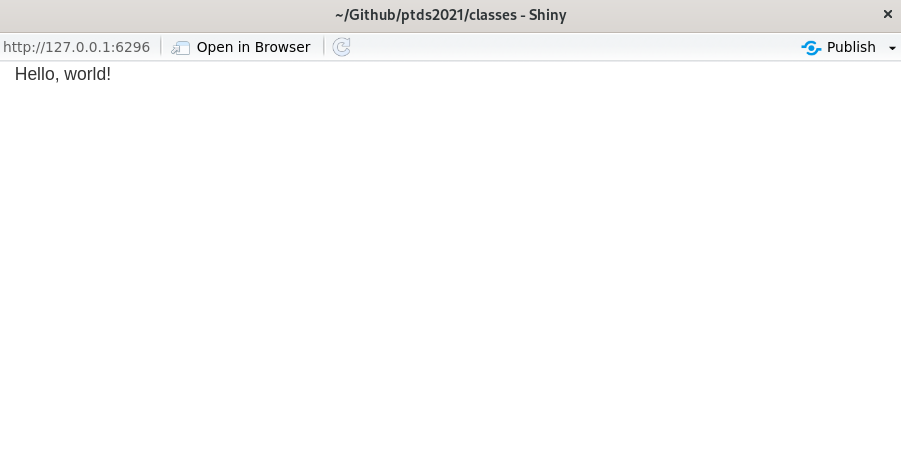
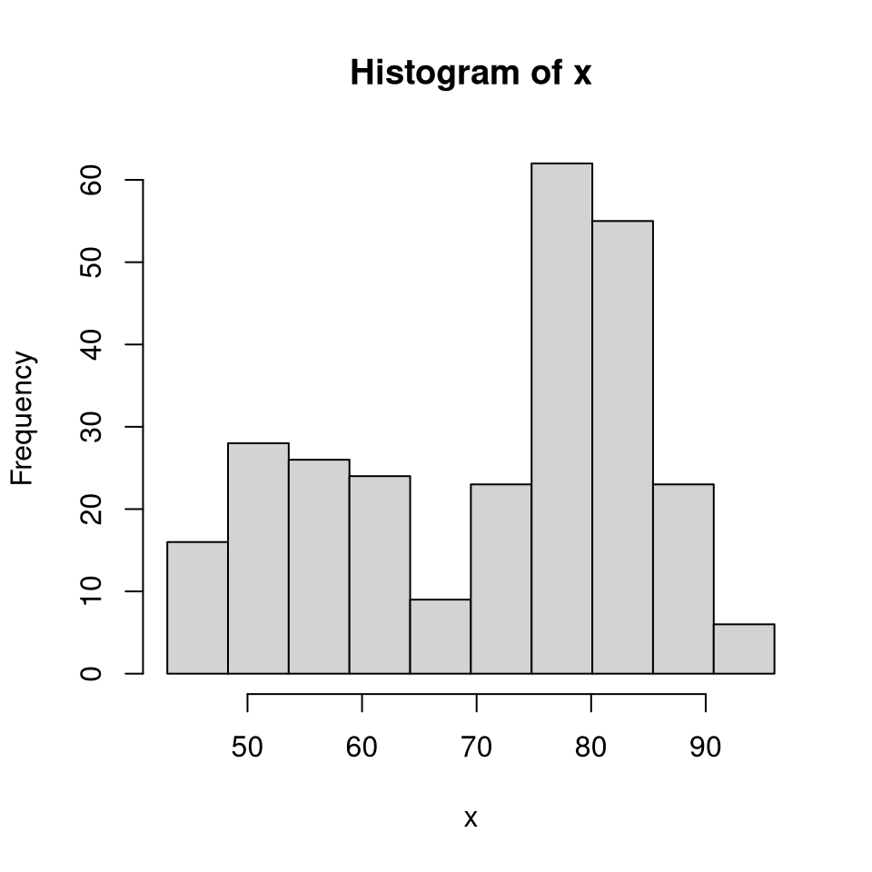
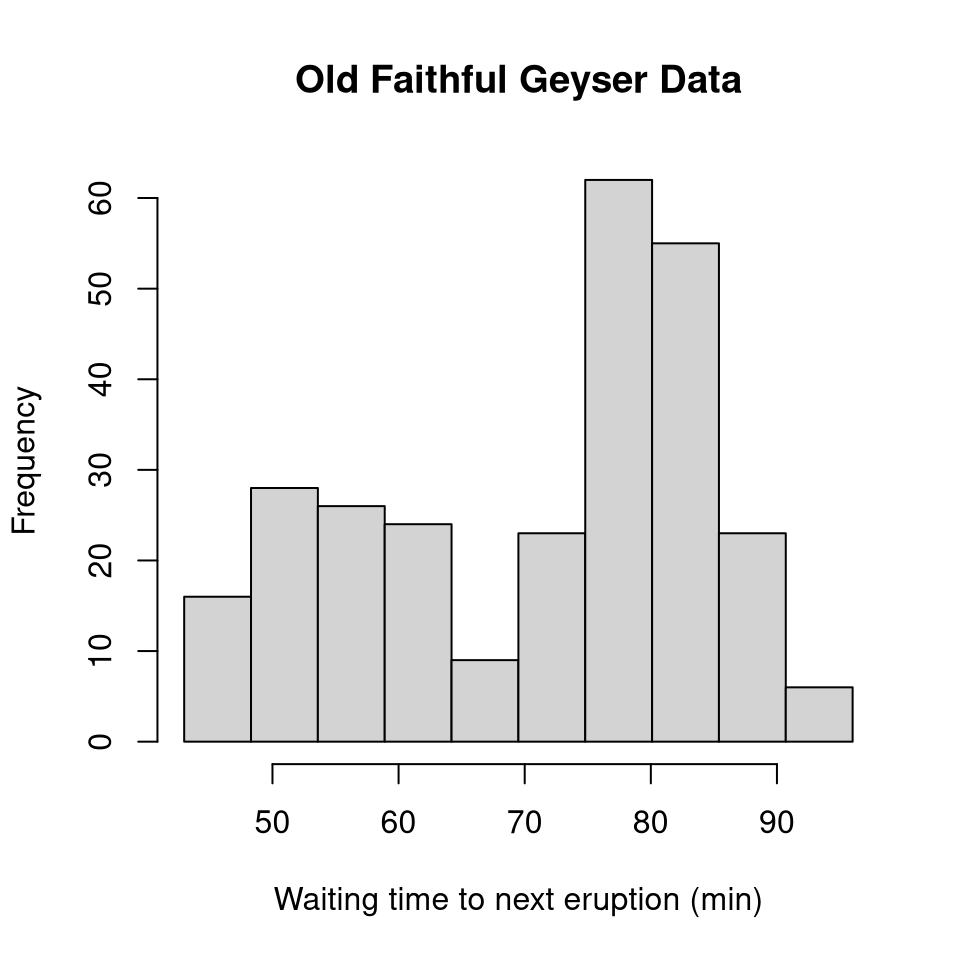
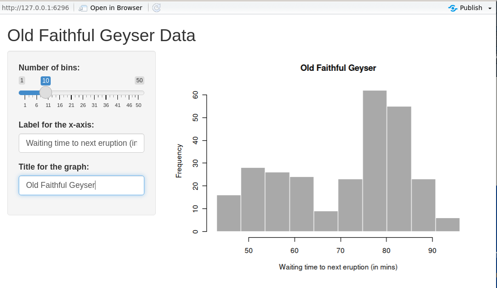
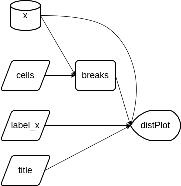
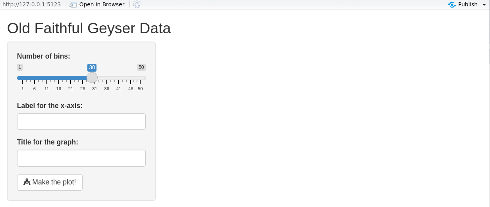
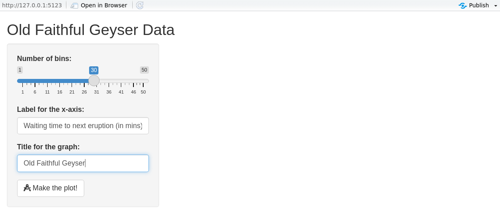
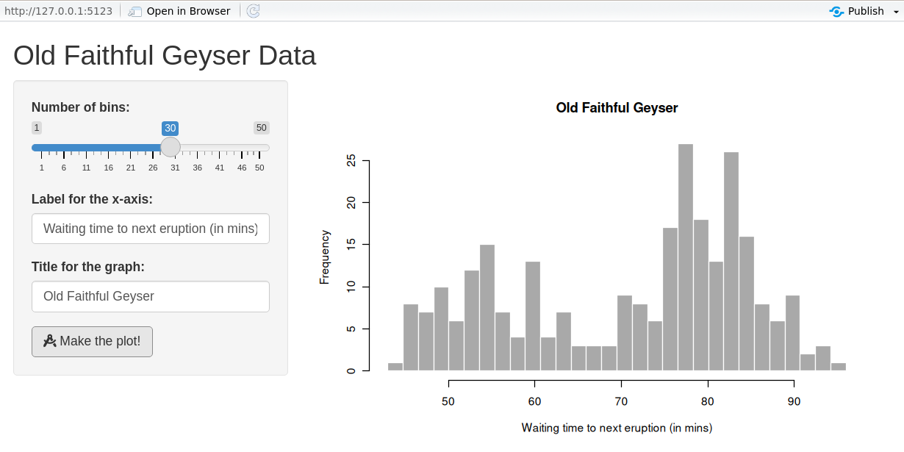
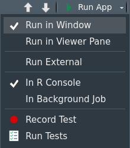

Lecture 5 — Modern Tools: BI & LLMs
Data & Code Management: From Collection to Application
2025-11-20
Group project overview
Group project overview
Group project: structure & roles
- Groups of 3 students
- Each group focuses on 3 complementary dimensions:
- Data gathering & wrangling → Lecture on Data Management & Collection
- Package development & website → Lecture on Software Engineering for Data Science
- Dashboard / web app development → Lecture on Modern Tools: BI & LLMs
- Idea: each student is lead on one dimension,
but everyone should understand the full pipeline.
Project goals
- Experience a mini end-to-end data project:
- from raw data collection
- to a reusable package
- to an interactive dashboard/web app
- from raw data collection
- Practice:
- Reproducible workflows (Git, GitHub, environments)
- Team collaboration (issues, branches, pull requests)
- Good engineering habits (tests, docs, CI where possible)
Role 1 – Data gathering & wrangling
Main responsibility: bring high-quality, analysis-ready data.
- Identify and justify data sources
- APIs, web scraping, open data portals, files from stakeholders, …
- Design and document the data collection pipeline
- Scripts in R or Python (no manual copy-paste)
- Clear description of licences, limitations, biases
- Perform cleaning & wrangling
- Tidy structures, variable names, types, missing values
- Reproducible transformations (no edits in Excel)
- Deliver:
data_raw/,data/, and scripts- A short data report (Quarto) describing the pipeline
Role 2 – Package development & website
Main responsibility: make the code reusable and documented.
- Organise core code into an R package or Python library:
- Functions for: data loading, cleaning, key computations, plots, models
- Minimal tests for critical functions
- Ensure reproducibility:
DESCRIPTION/pyproject.tomlor similar- Run CI on GitHub (e.g. with GitHub Actions)
- Make sure it can be installed from the repo
- Publish a small documentation website:
- Quarto or MkDocs + GitHub Pages
- Pages: Overview, Installation, Get started, Examples, API reference
- Deliver:
- One private GitHub repo on one member personal account
- Package repository structure
- Online or locally-buildable docs site
Role 3 – Dashboard / web app development
Main responsibility: communicate insights interactively.
- Build a dashboard or web app using e.g.:
- R: Shiny / Shiny for Python
- Python: Streamlit, Dash
- Or: Power BI dashboard (with R/Python where relevant)
- Consume the package functions whenever possible
(no copy-pasted logic from scripts) - Provide:
- At least 2–3 interactive views (filters, drill-downs, tooltips…)
- Clear layout and consistent visual design
- Short text explanations for a non-technical audience
- Deliver:
- App code + instructions to run it locally
- Screenshots / short demo GIF or video (optional but encouraged)
- One private GitHub repo on the organization
Shared responsibilities (all roles)
Regardless of your lead role, everyone is responsible for:
- Defining the project question
- What do you want to understand / monitor / predict / explain?
- Choosing tools (R / Python / mix) and architecture together
- Version control
- Git branching, pull requests, code review
- Code quality
- Consistent style, comments where needed, avoid dead code
- Final presentation
- Each member presents the part they led and shows understanding of the whole pipeline
All 3 students collaborate on the idea, the story, and the final presentation.
Suggested timeline (3 weeks + presentations)
- Week 1 – Topic & data
- Choose topic & research questions
- Find data sources & write first collection scripts
- Do quick EDA to check feasibility
- Choose topic & research questions
- Week 2 – Package & app (v1)
- Stabilise data pipeline (raw → cleaned)
- Set up package + key functions
- Build first working dashboard/web app
- Stabilise data pipeline (raw → cleaned)
- Week 3 – Polish & integrate
- Improve package (API, docs, a few tests)
- Refine dashboard (design, story, robustness)
- Finalise README + “How to run” + environment
- Improve package (API, docs, a few tests)
- Presentation week
- Present project & live demo
- Answer questions on data, package, and app
- Present project & live demo
Project grading (40 points)
| Dimension | Points |
|---|---|
| Data gathering & wrangling | 10 |
| Package development & documentation | 10 |
| Dashboard / web app | 10 |
| Reproducibility & project management | 5 |
| Presentation & individual contribution | 5 |
| Total | 40 |
- Each group is graded on the whole project, not only on their “role”.
- Roles (data / package / app) help structure the work,
but everyone should understand the full pipeline.
Next steps
- Form groups of 3 students
- Pick a topic that:
- has accessible data sources, and
- can benefit from a dashboard or web app
- Decide who leads what (roles can still evolve)
- Create your GitHub repository and write:
- A short
READMEwith:- topic
- research questions
- preliminary plan for the 3 dimensions
- A short
Shiny web app
Shiny web app
- Communication: allow users to interact with data and analysis in the browser.
- Shiny enables rapid development of web applications in R — no need to master HTML/CSS/JS (though they help!).
- Widely used in industry for collaboration, dashboards, prototyping, and internal tools.
- Runs locally, on a server, or in Posit Connect/Shinyapps.io/Docker.
Tip
Shiny apps are just R code: a UI that declares outputs and inputs, and a server that reacts to them.
Example: interact with graphics
Source: https://shiny.posit.co/r/gallery
Example: download a report
Source: https://shiny.posit.co/r/gallery
Example: rental cashflow calculator
Source: https://deanattali.com/
Example: Movie explorer
Source: https://shiny.posit.co/
Example: Be a DJ
Hello, world!
UI vs Server — the two halves
- User interface (UI): HTML-like description of widgets and output placeholders.
<div class="container-fluid">Hello, world!</div>- Server back-end: R code that computes results and fills outputs.
- Run the app with
shinyApp(ui, server)(orrunApp()).
Step 1: Back-end R code (data & plot)
We’ll build a histogram of waiting time between eruptions (faithful).
Add parameters (bins)
Add parameters (labels)
Step 2: User Interface (UI) / front-end
Once the back-end logic is clear, design the UI.
Page structure helpers
| Function | Description |
|---|---|
fluidPage() |
Create a fluid page layout |
titlePanel() |
Application title |
sidebarLayout() |
Sidebar + main area layout |
sidebarPanel() |
Sidebar with inputs |
mainPanel() |
Main content (plots, tables, …) |
- Alternatives to
fluidPage():fixedPage()(fixed width) andfillPage()(full height). sidebarLayout()is built onfluidRow()/column()for finer control.
Layout example (Quarto columns)
Multi-row layout with columns
Input controls
- Users provide inputs through widgets.
- All inputs follow
someInput(inputId, …). Access in server asinput$inputId.
| Function | Description |
|---|---|
numericInput() |
Number entry |
radioButtons() |
Radio selection |
selectInput() |
Dropdown menu |
sliderInput() |
Range/slider |
submitButton() |
Submission button |
textInput() |
Text box |
checkboxInput() |
Single checkbox |
dateInput() |
Date selector |
fileInput() |
Upload a file |
helpText() |
Describe input field |
Output controls & renderers
- Outputs create placeholders; render functions fill them.
- Access in server as
output$outputId.
| Output | Render | Description |
|---|---|---|
plotOutput() |
renderPlot() |
Plots |
tableOutput() |
renderTable() |
Simple tables |
textOutput() |
renderText() |
Text |
uiOutput() / htmlOutput() |
renderUI() |
HTML / dynamic UI |
verbatimTextOutput() |
renderPrint() |
Console-like text |
imageOutput() |
renderImage() |
Images |
UI example: histogram app
# Define UI for application that draws a histogram
ui <- fluidPage(
titlePanel("Old Faithful Geyser Data"),
sidebarLayout(
sidebarPanel(
sliderInput(
inputId = "cells",
label = "Number of cells:",
min = 1, max = 50, value = 30
),
textInput(inputId = "label_x", label = "X-axis label:"),
textInput(inputId = "title", label = "Plot title:")
),
mainPanel(
plotOutput(outputId = "distPlot")
)
)
)
Step 3: Implementing the back-end
- The server reacts to user actions (reactive programming).
- Prototype:
server <- function(input, output, session) { … }. input/outputare list-like and reactive.
ui <- fluidPage(
sliderInput(inputId = "cells", label = "Cells", min = 1, max = 50, value = 30),
textInput (inputId = "label_x", label = "X-axis label"),
textInput (inputId = "title", label = "Plot title"),
plotOutput(outputId = "distPlot")
)
server <- function(input, output, session) {
output$distPlot <- renderPlot({
x <- faithful[, 2]
breaks <- seq(min(x), max(x), length.out = input$cells + 1)
hist(x, breaks = breaks, col = 'darkgray', border = 'white',
xlab = input$label_x, main = input$title)
})
}Declarative & reactive graph
- Shiny is declarative: you state dependencies; Shiny figures out when to run code.
- Execution follows the reactive graph, not line order.
Reactive expressions
- In the previous app, changing any input recomputed
xandbreaks. - Use reactive expressions so values are recomputed only when their inputs change.
server <- function(input, output, session) {
x <- reactive(faithful[, 2]) # <- cached
breaks <- reactive(seq(min(x()), max(x()),
length.out = input$cells + 1))
output$distPlot <- renderPlot({
hist(x(), breaks = breaks(), col = 'darkgray', border = 'white',
xlab = input$label_x, main = input$title)
})
}Note
Order of reactive expressions in the file does not matter (dependencies determine execution), but readability does.
Reactive graph (after refactor)
breaks()updates only whencells(orx()) changes.
Reactive context matters
- Input values cannot be accessed outside a reactive context.
- A function wrapper will recompute every time:
- Prefer
reactive()to recompute only when needed.
Control evaluation time
- For heavy computations, let the user trigger updates with an
actionButton. - Use
eventReactive()orbindEvent()to react only on button clicks.
UI — add a button
Server — use eventReactive()
server <- function(input, output, session) {
x <- reactive(faithful[, 2])
breaks <- eventReactive(input$make_graph, {
seq(min(x()), max(x()), length.out = input$cells + 1)
})
xlab <- eventReactive(input$make_graph, input$label_x)
title <- eventReactive(input$make_graph, input$title)
output$distPlot <- renderPlot({
hist(x(), breaks = breaks(), col = 'darkgray', border = 'white',
xlab = xlab(), main = title())
})
}Alternative: bindEvent() (Shiny ≥ 1.6.0)
library(magrittr)
server <- function(input, output, session) {
x <- reactive(faithful[, 2])
breaks <- reactive(seq(min(x()), max(x()), length.out = input$cells + 1)) %>%
bindEvent(input$make_graph)
xlab <- reactive(input$label_x) %>% bindEvent(input$make_graph)
title <- reactive(input$title) %>% bindEvent(input$make_graph)
output$distPlot <- renderPlot({
hist(x(), breaks = breaks(), col = 'darkgray', border = 'white',
xlab = xlab(), main = title())
})
}What users see with eventReactive
What users see with eventReactive
What users see with eventReactive
Observers (side-effects)
- Use observers for side-effects (logging, DB writes, JS messages, …).
observeEvent()works likeeventReactive()but returns no value.
Step 4: Connect UI and server
shinyApp(ui = ui, server = server)creates an app object and runs on print.- Alternative: wrap in a function and
runApp()it.
Workflow
- Write UI & server in a single
app.R. - Launch (
Ctrl/Cmd+Shift+Enter). - Play with the app.
- Close and iterate.
You can choose the view you prefer.
Modularizing Shiny
Modules are one of the most powerful tools for building shiny applications in a maintainable and sustainable manner. Engineering Production-Grade Shiny Apps
Why modules?
- Divide & conquer large apps into small, testable pieces.
- Improves readability and reuse. Rule of thumb: copy–paste thrice? Make a function/module.
- In Shiny, IDs are global. Modules create namespaces to avoid conflicts.
Namespaces refresher (R packages)
- Namespaces ensure packages behave consistently regardless of attach order.
- Exported functions live in the package environment; internals live in the namespace.
- Each namespace has an imports env → parent is base → parent is global.
Simple app (before modules)
library(shiny)
ui <- fluidPage(
selectInput("var", "Variable", names(mtcars)),
numericInput("bins", "bins", 10, min = 1),
plotOutput("hist")
)
server <- function(input, output, session) {
data <- reactive(mtcars[[input$var]])
output$hist <- renderPlot({
hist(data(), breaks = input$bins, main = input$var)
}, res = 96)
}
shinyApp(ui = ui, server = server)UI module
- Wrap UI in a function taking
id. - Use
ns <- NS(id)andns("inputId")for all IDs.
Server module
moduleServer(id, function(input, output, session) { ... })defines the server logic.
Using the module in the app
- Use the same
idin UI and server.
Namespacing in Shiny modules
- UI: explicit (
ns <- NS(id); wrap IDs withns()). - Server: implicit — Shiny applies the same namespace internally.
- The global
input$bins(from the extra slider) does not affect the module’sinput$bins.
Sharing data between modules
- Return a
reactive()from one module and pass it to another.
histogramServer <- function(id, data, title = reactive("Histogram")) {
stopifnot(is.reactive(data))
moduleServer(id, function(input, output, session) {
output$hist <- renderPlot({
hist(data(), breaks = input$bins, main = title())
}, res = 96)
})
}
ui <- fluidPage(histogramUI("hist1"))
server <- function(input, output, session) {
data <- reactive(mtcars$mpg)
histogramServer("hist1", data)
}
shinyApp(ui, server)Alternative sharing strategies
- “Petit r”: a global
reactiveValues()object passed around modules. - “Grand R6”: organize state & logic in R6 classes, then bridge to Shiny.
- See also tidymodules (R6-based) for structured modular patterns.
Structuring an application as a package
- Strongly recommended for larger apps: better structure, docs, tests, CI, deployment.
- Put functions/modules in
R/, assets ininst/app/, etc. - Wrap the app in a function:
- Minimal example: https://github.com/ptds2024/bacteria
To go further
- Book: Mastering Shiny — https://mastering-shiny.org/
- Articles: Shiny articles — https://shiny.posit.co/r/articles/
- Course notes: An Introduction to Statistical Programming Methods with R — https://smac-group.github.io/ds/section-shiny-web-applications.html
- Engineering: Engineering Production-Grade Shiny Apps — https://engineering-shiny.org/
Rapid UI prototyping with shinyuieditor
shinyuieditoris an RStudio add-in to design Shiny UIs visually (drag & drop), then export clean UI code.- Typical workflow:
- Start from a blank or template app.
- Drag inputs, outputs, and layout elements (rows, columns, tabs, etc.).
- Adjust labels, IDs, and options in the side panel.
- Copy the generated
ui <- fluidPage(...)code into your app and connect it to your server logic.
Generating a Shiny dashboard with ChatGPT
- You can use ChatGPT as a UI & server code generator for Shiny apps.
- Typical workflow:
- Describe your goal clearly
> “Build a Shiny dashboard with a sidebar, filters foryearandregion, and a main panel with a time-series plot and a summary table using mysalesdata.” - Paste a sample of your data (or its structure with
str()/glimpse()). - Ask for complete minimal code (
app.R) withui,server, andshinyApp(ui, server). - Run the generated app locally, then iterate:
- “Add a download button for filtered data.”
- “Color bars by product category.”
- “Turn this into a
shinydashboardlayout.”
- Describe your goal clearly
Tip
Keep ChatGPT for boilerplate & layout; you remain responsible for data logic, validation, and interpretation.
Streamlit web app
Streamlit web app
- Purpose: build interactive web apps for data exploration, dashboards, and prototypes — using pure Python.
- Zero front‑end boilerplate: write from top to bottom; Streamlit turns widgets into UI.
- Rerun model: the script re-executes top-to-bottom on any user interaction; widgets persist state.
- Deploy anywhere: Streamlit Community Cloud, on-prem, Docker, or any VM.
Tip
Think of Streamlit as: Python script → reactive UI (without callbacks unless you need them).
Example gallery
You can explore examples here:
Streamlit App Gallery
Hello, world!
Run: streamlit run app.py
UI building blocks
- Text & media:
st.title,st.header,st.write,st.image,st.video - Widgets (inputs):
st.slider,st.selectbox,st.text_input,st.date_input,st.file_uploader, … - Outputs:
st.table,st.dataframe,st.code,st.map,st.plotly_chart,st.pyplot, … - Layout:
st.sidebar,st.columns,st.container,st.tabs,st.expander
Note
Each widget takes a key (optional) and writes to st.session_state[key].
Quick histogram app (parallel to the Shiny demo)
import streamlit as st
import numpy as np
import matplotlib.pyplot as plt
st.title("Old Faithful (demo with random data)")
# Inputs
bins = st.slider("Number of bins", min_value=1, max_value=50, value=30, key="bins")
label_x = st.text_input("X-axis label", value="Value", key="label_x")
title = st.text_input("Plot title", value="Histogram", key="title")
# Data & plot
x = np.random.normal(size=272)
fig, ax = plt.subplots()
ax.hist(x, bins=bins, edgecolor="white")
ax.set_xlabel(label_x)
ax.set_title(title)
st.pyplot(fig)Rerun model vs. reactive graph
- Streamlit: any widget change reruns the script from the top; state lives in
st.session_state. - Shiny: uses a reactive graph and recomputes only dependent nodes.
Tip
Use caching (@st.cache_data, @st.cache_resource) to avoid recomputing expensive work on each rerun.
Caching essentials
cache_data= memoize data/compute results;ttl/show_spinneroptions.cache_resource= memoize resources (clients, models, connections).
Control evaluation time (buttons & forms)
- Forms group inputs and run only on submit.
st.button,st.togglealso gate heavy work.
Callbacks & session_state
- Use
on_change/on_clickto run callbacks. st.session_statestores cross‑rerun state.
Layout patterns
import streamlit as st
st.sidebar.success("Filters go here")
left, right = st.columns([1, 2])
with left:
st.markdown("### Controls")
_ = st.selectbox("Metric", ["RMSE", "MAE", "R^2"])
with right:
st.markdown("### Chart")
st.line_chart({"y": [1, 3, 2, 4]})
with st.expander("Details"):
st.code("print('debug info')")Multipage apps
my_app/
app.py # Home page
pages/
1_Explore.py
2_Model.py
3_Report.py- Pages appear automatically as a sidebar navigation.
- Prefix numbers to control ordering.
Components & charts
- Native charts:
st.line_chart,st.bar_chart,st.scatter_chart. - Matplotlib/Altair/Plotly:
st.pyplot(fig),st.altair_chart(chart),st.plotly_chart(fig). - Custom components: third‑party JS/TS via
streamlit-components(advanced).
Data display & interactivity
Performance tips
- Cache heavy work with
@st.cache_dataand@st.cache_resource. - Avoid global mutation; prefer pure functions + caching.
- Use
st.experimental_fragment(if available) to isolate reruns on parts of the page. - Minimize large
st.dataframe()payloads; paginate or sample for previews. - Offload long tasks and stream results with
st.write_stream(if relevant) or background services.
Testing & quality
- Unit-test pure Python logic with
pytest. - Snapshot/visual tests using Playwright or Selenium on the served app.
- Type-check with
mypy/pyright; lint withruff. - Organize app code into modules (
app/,components/,services/).
Packaging & project structure (suggestion)
streamlit_app/
app.py
pages/
app/__init__.py
app/data.py # data loading (cached)
app/viz.py # plotting utilities
app/layout.py # column/tab builders
requirements.txt
pyproject.toml # optional (poetry/pdm)- Keep stateful UI thin; move logic to testable modules.
- Pin dependencies for reproducibility.
Deployment
- Streamlit Community Cloud: connect a Git repo, configure Python version & secrets.
- Docker:
FROM python:3.12-slim→pip install -r requirements.txt→streamlit run app.py --server.port 8501 --server.address 0.0.0.0. - Reverse proxy: serve behind Nginx/Traefik; enable WebSocket support.
- Secrets: use
st.secrets["key"]for API tokens.
Common pitfalls & how to avoid them
- Forgetting
key→ widgets clobber each other. - Doing heavy work on each rerun → add forms/buttons and cache.
- Mutating global objects → can break caching; prefer pure returns.
- Large images/tables → increase latency; downsample or paginate.
Minimal template you can copy
# app.py
import streamlit as st
import pandas as pd
import matplotlib.pyplot as plt
st.set_page_config(page_title="Template", layout="wide")
st.title("Project Title")
with st.sidebar:
st.header("Controls")
n = st.slider("N", 10, 5000, 500)
run = st.button("Run analysis")
@st.cache_data
def simulate(n):
import numpy as np
x = np.random.randn(n)
return pd.DataFrame({"x": x})
if run:
df = simulate(n)
st.dataframe(df.head())
fig, ax = plt.subplots()
ax.hist(df["x"], bins=30, edgecolor="white")
st.pyplot(fig)
else:
st.info("Adjust parameters and click **Run analysis**.")To go further
- Docs: https://docs.streamlit.io/
- Gallery & tutorials: https://streamlit.io/gallery
- Streamlit Components: https://docs.streamlit.io/develop/concepts/components
- Cheatsheet: search “Streamlit cheatsheet” for a handy reference.
Tip
Want a side-by-side set of slides comparing Shiny vs Streamlit patterns for your course? I can generate a combined deck with parallel examples.
AI for Data Visualization & Dashboards
Outcomes & Agenda (60’)
- Outcomes: tidy data → 1 polished chart → 1‑page web app (Streamlit or Shiny) + publication checklist.
- Focus: We use LLMs (ChatGPT) to scaffold, critique, and polish.
- Agenda (mins): 2 intro • 6 case & prompts • 10 tidy & validate • 12 chart • 20 app • 8 checklist & wrap.
Tip
Throughout, copy/paste prompt patterns from the “Cheatsheet” slides. Keep your schema visible when prompting.
Case Study: Energy & Economy Brief
- Metrics: monthly electricity price index (
price) and inflation (cpi) for 3–4 countries, 2019–2025. - Tidy table (long):
date, country, metric, value(month‑end dates, units documented). - Deliverables: one publication‑ready line chart + a micro‑app (country/metric selectors, KPI card, chart, download).
Where would look for these data?
If you don’t have data: use the synthetic fallback in the next slides (identical schema).
Synthetic Data & Tests (optional)
- Generates monthly data for CH, FR, DE, IT with two metrics:
price(electricity price index) andcpi(inflation index). - Features: trend, seasonality, 2022 energy shock with 2023 partial unwind, small stochastic noise.
- Output: long table
data/golden.parquetwith columns:date, country, metric, value+ sanity checks.
Synthetic Data & Tests (optional)
# python/synth_and_tests.py
# Reproducible, realistic synthetic monthly data (2019-01 to 2025-12)
import os, numpy as np, pandas as pd
rng = np.random.default_rng(123)
countries = ["CH", "FR", "DE", "IT"]
dates = pd.period_range("2019-01", "2025-12", freq="M").to_timestamp("M")
n = len(dates)
t = np.arange(n)
def price_series(idx: int) -> np.ndarray:
# Electricity price index: trend + seasonality + 2022 shock + partial 2023 unwind + mild AR-like noise
base = 100 + 0.8*idx
slope = 0.12 + 0.03*idx # ~0.12–0.21 index pts/month
season_amp = 2.0 + 0.6*idx # stronger seasonality for some countries
seasonal = season_amp * np.sin(2*np.pi*(t % 12)/12)
shock = np.zeros(n)
m2022 = (dates >= "2022-01-31") & (dates <= "2022-12-31")
ramp = np.linspace(0, 12 + 3*idx, m2022.sum()) # build-up through 2022
shock[m2022] = ramp
m2023 = (dates >= "2023-01-31") & (dates <= "2023-12-31")
shock_end_2022 = ramp[-1] if ramp.size else 0
unwind = np.linspace(shock_end_2022, 6 + 1.5*idx, m2023.sum()) # partial normalization through 2023
shock[m2023] = unwind
# 2024–2025: hold residual shock level
eps = rng.normal(0, 0.6, n) # small noise with persistence
noise = np.cumsum(eps) * 0.12
return base + slope*t + seasonal + shock + noise
def cpi_series(idx: int) -> np.ndarray:
# Inflation index: gradual drift, 2022 bump, 2023 cool-down, light seasonality/noise
base = 100 + 0.4*idx
drift = np.linspace(0, 10 + 2*idx, n) # ~+10–16 pts by 2025
bump = np.zeros(n)
m2022 = (dates >= "2022-01-31") & (dates <= "2022-12-31")
bump[m2022] = np.linspace(0, 2.8 + 0.5*idx, m2022.sum())
cool = np.zeros(n)
m2023 = (dates >= "2023-01-31") & (dates <= "2023-12-31")
cool[m2023] = -np.linspace(0, 1.2, m2023.sum())
seasonal = 0.5 * np.sin(2*np.pi*(t % 12)/12)
noise = np.cumsum(rng.normal(0, 0.15, n)) * 0.08
return base + drift + bump + cool + seasonal + noise
rows = []
for idx, c in enumerate(countries):
p = price_series(idx)
cp = cpi_series(idx)
rows += [(d, c, "price", float(v)) for d, v in zip(dates, p)]
rows += [(d, c, "cpi", float(v)) for d, v in zip(dates, cp)]
df = pd.DataFrame(rows, columns=["date", "country", "metric", "value"]).sort_values(["country","metric","date"])
os.makedirs("data", exist_ok=True)
df.to_parquet("data/golden.parquet", index=False)
# Sanity checks
assert set(df["country"]) == set(countries)
assert df["date"].nunique() == n
for c in countries:
for m in ["price", "cpi"]:
sub = df[(df.country == c) & (df.metric == m)]
assert len(sub) == n, f"Missing months for {c}-{m}"
assert np.isfinite(df["value"]).all()
print(f"OK: {len(df):,} rows · {len(countries)} countries × 2 metrics × {n} months")# r/synth.R
# Reproducible, realistic synthetic monthly data (2019-01 to 2025-12)
library(dplyr); library(lubridate); library(purrr); library(arrow)
set.seed(123)
countries <- c("CH","FR","DE","IT")
dates <- seq(ymd("2019-01-31"), ymd("2025-12-31"), by = "1 month")
n <- length(dates)
t <- seq_len(n) - 1
price_series <- function(idx){
base <- 100 + 0.8*idx
slope <- 0.12 + 0.03*idx # ~0.12–0.21 per month
season_amp <- 2.0 + 0.6*idx
seasonal <- season_amp * sin(2*pi*((t) %% 12)/12)
shock <- rep(0, n)
m2022 <- dates >= ymd("2022-01-31") & dates <= ymd("2022-12-31")
ramp <- seq(0, 12 + 3*idx, length.out = sum(m2022))
shock[m2022] <- ramp
m2023 <- dates >= ymd("2023-01-31") & dates <= ymd("2023-12-31")
shock_end_2022 <- if (length(ramp)) tail(ramp, 1) else 0
unwind <- seq(shock_end_2022, 6 + 1.5*idx, length.out = sum(m2023))
shock[m2023] <- unwind
eps <- cumsum(rnorm(n, 0, 0.6)) * 0.12 # mild persistence
base + slope*t + seasonal + shock + eps
}
cpi_series <- function(idx){
base <- 100 + 0.4*idx
drift <- seq(0, 10 + 2*idx, length.out = n) # ~+10–16 by 2025
bump <- rep(0, n)
m2022 <- dates >= ymd("2022-01-31") & dates <= ymd("2022-12-31")
bump[m2022] <- seq(0, 2.8 + 0.5*idx, length.out = sum(m2022))
cool <- rep(0, n)
m2023 <- dates >= ymd("2023-01-31") & dates <= ymd("2023-12-31")
cool[m2023] <- -seq(0, 1.2, length.out = sum(m2023))
seasonal <- 0.5 * sin(2*pi*((t) %% 12)/12)
noise <- cumsum(rnorm(n, 0, 0.15)) * 0.08
base + drift + bump + cool + seasonal + noise
}
df <- map2_dfr(countries, seq_along(countries) - 1, function(c, idx){
tibble(
date = rep(dates, 2),
country = c,
metric = rep(c("price","cpi"), each = n),
value = c(price_series(idx), cpi_series(idx))
)
}) %>% arrange(country, metric, date)
dir.create("data", showWarnings = FALSE)
arrow::write_parquet(df, "data/golden.parquet")
# Sanity checks
stopifnot(length(unique(df$date)) == n)
stopifnot(setequal(unique(df$country), countries))
stopifnot(all(df %>% count(country, metric) %>% pull(n) == n))
stopifnot(all(is.finite(df$value)))
message(sprintf("OK: %s rows · %s countries × 2 metrics × %s months", nrow(df), length(countries), n))Prompt Cheatsheet (1/2)
A — Wireframes & KPIs
Act as a visualization TA. Given columns
date,country,metric,value, propose 3 dashboard wireframes (KPI strip + main trend + small multiples). Output: titles, annotation ideas, and accessibility notes.
B — Tidy & Validate (already done with the synthetic data)
Write code to: (1) coerce month‑end dates, (2) detect duplicates on
(date,country,metric), (3) exportdata/golden.parquet, and (4) print a concise validation summary.
Prompt Cheatsheet (2/2)
C — Chart Critique
Given this code + chart description, propose 3 concrete improvements (titles/scales/labels) and show the revised code.
D — App Scaffold
Generate a one‑page Streamlit/Shiny app with country & metric selectors, a KPI card (last value + YoY%), main chart, and a download button. Keep it minimal and fast.
E — Publication Audit
Audit the chart/app against this checklist (titles, axes/units, color‑blind safety, footnotes, last updated). Return exact fixes (code + text) and a 2‑sentence executive summary.
Tidy & Validate — Python
# python/tidy.py
import pandas as pd, numpy as np, os
os.makedirs("data", exist_ok=True)
# Try to load; otherwise create synthetic fallback
try:
df = pd.read_parquet("data/golden.parquet")
except Exception:
dates = pd.period_range("2019-01", "2025-06", freq="M").to_timestamp("M")
countries = ["CH","FR","DE"]
rng = np.random.default_rng(0)
rows = []
for c in countries:
base = 100 + rng.normal(0,1)
price = base + np.cumsum(rng.normal(0,1,len(dates))) + 0.15*np.arange(len(dates))
cpi = 100 + np.cumsum(np.clip(rng.normal(0,0.3,len(dates)), -0.2, 0.8))
rows += [(d,c,"price",p) for d,p in zip(dates,price)]
rows += [(d,c,"cpi",v) for d,v in zip(dates,cpi)]
df = pd.DataFrame(rows, columns=["date","country","metric","value"])
# Coerce to month‑end, check duplicates
df["date"] = pd.to_datetime(df["date"]).dt.to_period("M").dt.to_timestamp("M")
dups = df.duplicated(["date","country","metric"]).sum()
print(f"Rows: {len(df):,} · Duplicates: {dups}")
# Save tidy table
df.to_parquet("data/golden.parquet", index=False)Tidy & Validate — R
# r/tidy.R
library(dplyr); library(lubridate); library(arrow)
if (!dir.exists("data")) dir.create("data")
if (!file.exists("data/golden.parquet")) {
dates <- seq(ymd("2019-01-31"), ymd("2025-06-30"), by="1 month")
mk <- function(n) cumsum(rnorm(n, 0, 1))
make_country <- function(c) {
tibble(date=dates, country=c, metric="price", value=100 + mk(length(dates)) + 0.15*seq_along(dates)) |>
bind_rows(tibble(date=dates, country=c, metric="cpi", value=100 + cumsum(pmax(rnorm(length(dates),0,0.3),-0.2))))
}
df <- bind_rows(lapply(c("CH","FR","DE"), make_country))
write_parquet(df, "data/golden.parquet")
}
df <- read_parquet("data/golden.parquet") |>
mutate(date = ceiling_date(as.Date(date), "month") - days(1))
sum(duplicated(df[c("date","country","metric")]))
write_parquet(df, "data/golden.parquet")Publication‑Ready Chart — Python (Altair)
# python/chart.py
import altair as alt, pandas as pd
alt.data_transformers.disable_max_rows()
df = pd.read_parquet("data/golden.parquet")
price = df.query("metric=='price'")
chart = (alt.Chart(price)
.mark_line()
.encode(
x=alt.X("date:T", title=None),
y=alt.Y("value:Q", title="Electricity price index (2019-12=100)"),
color=alt.Color("country:N", legend=alt.Legend(orient="bottom"))
)
.properties(width=760, height=340, title="Electricity price index by country")
)
chart.save("figs/price_trend.svg")Note
Ask ChatGPT for title/subtitle copy, annotation ideas, and accessibility tweaks (line styles, label size, legend placement).
Publication‑Ready Chart — R (ggplot2)
# r/chart.R
library(ggplot2); library(dplyr); library(arrow)
df <- read_parquet("data/golden.parquet") |> filter(metric=="price")
ggplot(df, aes(date, value, color=country)) +
geom_line(linewidth=.9) +
labs(title="Electricity price index by country",
subtitle="Monthly, 2019–2025; baseline 2019-12=100",
x=NULL, y="Index (2019-12=100)") +
theme_minimal(base_size = 13) +
theme(legend.position="bottom")
ggsave("figs/price_trend.svg", width=8.5, height=4.2, dpi=300)Micro‑App — Python (Streamlit)
# app.py
import streamlit as st, pandas as pd, altair as alt
@st.cache_data
def load(): return pd.read_parquet("data/golden.parquet")
df = load()
st.title("Energy & Economy Brief")
country = st.selectbox("Country", sorted(df["country"].unique()))
metric = st.selectbox("Metric", sorted(df["metric"].unique()))
sub = df[(df.country==country) & (df.metric==metric)].sort_values("date")
last = sub.value.iloc[-1]
yoy = None
if len(sub) > 12:
yoy = (sub.value.iloc[-1]/sub.value.iloc[-13]-1)*100
st.metric("Last value", f"{last:.1f}", f"{yoy:+.1f}% YoY" if yoy is not None else None)
st.altair_chart(alt.Chart(sub).mark_line().encode(x="date:T", y="value:Q"), use_container_width=True)
st.download_button("Download CSV", sub.to_csv(index=False).encode(), file_name=f"{country}_{metric}.csv")
# run: streamlit run app.pyMicro‑App — R (Shiny)
# app.R
library(shiny); library(dplyr); library(ggplot2); library(arrow)
df <- read_parquet("data/golden.parquet")
ui <- fluidPage(
titlePanel("Energy & Economy Brief"),
sidebarLayout(
sidebarPanel(
selectInput("country","Country", choices = sort(unique(df$country))),
selectInput("metric","Metric", choices = sort(unique(df$metric)))
),
mainPanel(
uiOutput("kpi"), plotOutput("main"), downloadButton("dl","Download CSV")
)
)
)
server <- function(input, output, session){
dat <- reactive(df |> filter(country==input$country, metric==input$metric) |> arrange(date))
output$kpi <- renderUI({
d <- dat(); if(nrow(d)<1) return(NULL)
last <- tail(d$value,1); yoy <- if(nrow(d)>12) round((last/d$value[nrow(d)-12]-1)*100,1) else NA
tagList(h4(sprintf("Last: %.1f", last)), if(!is.na(yoy)) h5(sprintf("YoY: %.1f%%", yoy)))
})
output$main <- renderPlot({ ggplot(dat(), aes(date,value)) + geom_line(linewidth=.9) + theme_minimal(13) })
output$dl <- downloadHandler(
filename = function() paste0(input$country,"_",input$metric,".csv"),
content = function(file) write.csv(dat(), file, row.names = FALSE)
)
}
shinyApp(ui, server)Publication‑Ready Checklist
- Clarity: informative title + scope; labeled axes; units & baselines.
- Accuracy: correct YoY and rolling logic (if any); aligned monthly periods.
- Accessibility: color‑blind‑safe palette; readable labels; no dual axes.
- Context: source + last updated; footnotes for methods; export SVG/PNG.
- Reproducibility:
requirements.txt/{renv}lock; decisions in README.
Prompt: Audit the app & chart against this checklist and output exact fixes with revised code blocks.
Repo Skeleton & Quick Start
workshop/
├─ data/ # golden.parquet lives here
├─ python/ # tidy.py, chart.py
├─ r/ # tidy.R, chart.R
├─ figs/
├─ app.py # Streamlit app (or app.R for Shiny)
├─ README.md
├─ requirements.txt # pandas, altair, streamlit, pyarrow
└─ renv.lock # if using RRun (Python): python python/tidy.py → python python/chart.py → streamlit run app.py Run (R): Rscript r/tidy.R → Rscript r/chart.R → Rscript app.R
Closing & Next Steps
- Where did LLM help most? scaffolding • critique • copywriting • QA.
- Extensions: small multiples; annotation layers; scenario slider; auto‑report (Quarto) bundling top charts + narrative.
Power BI in the dashboard landscape
Same goal as Shiny and Streamlit: interactive dashboards and data apps.
Different positioning:
- Power BI: enterprise BI platform, tightly integrated with Microsoft 365 / Azure.
- Shiny: R-centric, very flexible, great for statisticians.
- Streamlit: Python-centric, very fast for prototypes and ML demos.
In many companies, Power BI is the default front-end for business dashboards.
Tip
In this course: Shiny & Streamlit for programmable apps, Power BI for enterprise dashboards and data wrangling.
Dashboards: quick design recap
Dashboards are visual displays of the most important information to reach one or more objectives, shown on a single screen for at-a-glance monitoring.
Strongly influenced by Stephen Few (Show Me the Numbers, Information Dashboard Design).
Core principles:
- Prefer bars/lines over pies and gauges.
- Avoid clutter and unnecessary decoration.
- Highlight what matters; give enough context, not too much detail.
When to use Power BI vs Shiny vs Streamlit
| Question | Power BI | Shiny | Streamlit |
|---|---|---|---|
| Target users | Business users, managers | Statisticians, R users | Data scientists, Python users |
| Main strength | Self-service BI, data models | Statistical workflows in R | ML & prototyping in Python |
| Governance & sharing | Very strong (Power BI Service) | Needs server / Shiny Server | Needs server / Streamlit Cloud |
| Level of coding | Low/medium (M, DAX, some R/Py) | Medium/high (R) | Medium/high (Python) |
| Best for | KPI dashboards, corporate views | Custom modelling tools | Quick interactive experiments |
In practice, you often combine them:
- Power BI for standard dashboards.
- Shiny/Streamlit for exploratory tools and niche analytics.
Power BI building blocks
Power BI Desktop (what we use in class):
- Connect to data sources.
- Clean and transform with Power Query.
- Model data (relations, star schema).
- Add DAX measures.
- Build visuals & dashboards.
Power BI Service / Fabric (online):
- Publish and share.
- Refresh data.
- Manage access & governance.
We will focus on Desktop + Power Query and show where R / Python fit.
Power Query & DAX: two languages
Power Query (M language)
- ETL / data wrangling: imports, column types, joins, filters, pivots, etc.
- Code is generated by clicking, but is traceable and reproducible.
DAX (Data Analysis Expressions)
- Calculated columns & measures on the semantic model.
- Dynamic aggregations depending on filters (visual context).
Analogy:
- Power Query M ≈ dplyr / data.table / pandas.
- DAX ≈
group_by+summarisebut evaluated on-the-fly in visuals.
Strengths of Power BI
- #1 or #2 tool in many large companies for dashboards and self-service BI.
- Strong visualization engine, good defaults.
- Connects to many data sources; handles large volumes.
- Power Query gives a structured, stepwise, and documented data pipeline.
- Integrates with R and Python for advanced analytics and exports.
Typical data analytics workflow (Power BI view)
In many DA projects you will:
Import data (Excel, CSV, SQL, SAP extracts, folders of files, …).
Clean & transform:
- Change column types, rename, filter.
- Add new columns (custom formulas).
- Group & summarize.
- Append / merge tables.
Model the data (relations, star schemas).
Visualize with charts and tables.
Export / reuse the prepared data (Power BI visuals, CSVs, R/Python).
Power BI + Power Query cover steps 1–4, and we can integrate R/Python in 2, 4 & 5.
Getting data into Power BI
Use Home → Get data.
Common sources in this course:
- Excel workbooks (multiple sheets = multiple tables).
- CSV / text files (delimiters:
,,;, tab, …). - Folders of files (for monthly SAP extracts, etc.).
After import you can:
- Load directly to the model; or
- Click Transform data to open Power Query.
Power Query basics
The Power Query editor shows:
- Queries pane: list of tables (queries).
- Data preview: sample rows.
- Applied Steps: ordered list of transformations.
- Formula bar: M code for the current step.
Key ideas:
- Every transformation adds a step and corresponding M expression.
- You can rename, reorder, delete steps.
- This gives full traceability for your data pipeline.
Column types, distribution & profiles
Each column has a type (text, number, date, …).
Use the Column quality / distribution / profile options to:
- See missing values, distinct values.
- Check minimum, maximum, mean, etc.
Fix suspicious types early (e.g. IDs imported as numbers instead of text).
This is the Power BI counterpart of doing str() / summary() / skim() in R or df.info() / df.describe() in Python.
Append files (stacking data)
Use this when you have multiple files with the same structure:
Get data → Folderand select the folder with files.- In Power Query, click Combine → Combine & Transform.
- Choose the worksheet / table to import.
- Inspect the generated steps.
Watch out:
- All files must have identical columns (names + types).
- If Power Query infers wrong types in the last step, delete or edit that step.
Merge / join tables
Home → Merge queriesto join tables.Typical use case: add master data (e.g. customers, products) to a transaction table.
Choose:
- Primary table.
- Lookup table.
- Join keys (can be multiple columns).
- Join type (left, inner, full, …).
Then expand the resulting column and select the fields you need.
Equivalent to left_join, inner_join, etc. in dplyr or merge in pandas.
Grouping and summarizing
Two main options:
In Power Query:
Transform → Group by(switch to Advanced).- Choose grouping keys and aggregation (sum, count, min, max, …).
- Creates a new summarized table.
In Power BI visuals:
- Add fields to a Table or Matrix visualization.
- Aggregations computed on the fly (using implicit or explicit DAX measures).
Power Query summaries are static (pre-computed), DAX summaries are dynamic (reactive to filters).
Pivot wide / pivot long
Pivot columns (wide): turn values in a column into separate columns.
- E.g. movement types 101/102 become separate date columns.
- Then compute differences between dates.
Unpivot columns (long): turn multiple columns into key–value pairs.
- Useful for time series, measures in columns, etc.
These operations mirror pivot_wider / pivot_longer in tidyr or melt/pivot in pandas.
Exporting data from Power BI
Options:
Export from a visual (up to ~30k rows):
- Use a Table visual, click
… → Export data. - Exports to CSV.
- Use a Table visual, click
Use R or Python in Power Query to write larger tables out:
- Add a reference to the table query.
Transform → Run R scriptorTransform → Run Python script.- Write to CSV or Excel in a controlled folder.
We will use this to bridge from Power BI to external R/Python analyses.
Export > 30k rows with R (example)
In Power Query, on a referenced query, add Run R script and use:
# 'dataset' holds the input data for this script
local_packages <- installed.packages()[, 1]
if (!"writexl" %in% local_packages) {
install.packages("writexl")
}
if (nrow(dataset) <= 500000) {
writexl::write_xlsx(dataset, "C:/temp/data.xlsx")
} else {
write.table(dataset, "C:/temp/data.csv", row.names = FALSE, sep = ",")
}- Make sure the folder (e.g.
C:/temp/) exists and is writable. - Power BI will pass the current table as
dataset.
Export > 30k rows with Python (example)
Similarly, using Run Python script in Power Query:
- Power BI provides a pandas DataFrame named
dataset. - This is a convenient way to extract large, cleaned datasets.
R & Python in Power BI: overview
You can integrate R and Python in Power BI in three main ways:
- As data sources (Get data → R script / Python script).
- As transformation steps in Power Query (Run R script / Run Python script).
- As visuals (R visual / Python visual) on the report canvas.
This allows you to:
- Reuse existing R / Python code.
- Build advanced plots with ggplot2, matplotlib, seaborn, altair, …
- Run niche models and show their results in Power BI.
Configuring R & Python in Power BI Desktop
Before you start:
Install R (e.g. from CRAN) and / or Python (e.g. from Anaconda or
python.org).In File → Options and settings → Options:
- Go to R scripting and set the R home directory.
- Go to Python scripting and set the Python executable.
(Optional) Set up a dedicated virtual environment for Power BI.
Limitations:
- Some packages may not work in the Power BI Service.
- R/Python visuals are rendered as images (no interactive HTML widgets).
Using R script as a data source
Home → Get data → More… → Other → R script.- Enter R code that returns a data frame.
Example:
- Power BI will detect data frames and let you select which tables to load.
Using Python script as a data source
Home → Get data → More… → Other → Python script.- Enter Python code that creates pandas DataFrames.
- All variables that are DataFrames will be offered as tables.
R / Python scripts in Power Query
In Power Query:
Transform → Run R scriptorTransform → Run Python script.Power BI passes the current table as:
dataset(R): a data frame.dataset(Python): a pandas DataFrame.
Pattern:
- The object
outputis then used as the next step.
Example: using R to detect duplicates
Equivalent to the VMD duplicate bank account example:
# 'dataset' contains vendor master data with BANKS, BANKL, BANKN
library(dplyr)
# count rows per bank account
counts <- dataset %>%
group_by(BANKS, BANKL, BANKN) %>%
summarise(n = n(), .groups = "drop") %>%
filter(n > 1)
# join back to keep only vendors with duplicated accounts
output <- dataset %>%
inner_join(counts, by = c("BANKS", "BANKL", "BANKN")) %>%
arrange(BANKN, BANKL, BANKS)This reproduces the Power Query steps using R code.
Example: using Python to detect duplicates
# 'dataset' contains vendor master data with BANKS, BANKL, BANKN
import pandas as pd
counts = (
dataset
.groupby(["BANKS", "BANKL", "BANKN"], as_index=False)
.size()
.rename(columns={"size": "n"})
)
counts = counts[counts["n"] > 1]
output = (
dataset.merge(counts, on=["BANKS", "BANKL", "BANKN"], how="inner")
.sort_values(["BANKN", "BANKL", "BANKS"])
)Again, output becomes the next Power Query step.
R and Python visuals
On the report canvas you can:
- Add an R visual (blue R icon) or Python visual (yellow Py icon).
- Drag fields into the Values well.
- Write R / Python code that uses the provided
dataset(data frame / DataFrame).
Use this to:
- Create advanced charts (ggplot2, seaborn, altair, …).
- Do small model fits and display predictions.
Note: visuals are rendered as static images; interactive HTML widgets are not supported.
Example: ggplot2 R visual
This is very similar to doing a scatter plot in a Shiny app, but embedded directly in Power BI.
Example: Python / matplotlib visual
# 'dataset' contains columns: Date, Sales
import matplotlib.pyplot as plt
import pandas as pd
fig, ax = plt.subplots()
# Ensure Date is datetime and sorted
data = dataset.copy()
data["Date"] = pd.to_datetime(data["Date"])
data = data.sort_values("Date")
ax.plot(data["Date"], data["Sales"])
ax.set_xlabel("Date")
ax.set_ylabel("Sales")
ax.set_title("Sales over time")
fig.autofmt_xdate()
plt.show()This mirrors a basic Streamlit time series plot.
Combining Power BI with Shiny / Streamlit
A realistic project might look like:
Exploration & modelling:
- Use R / Python in RStudio / VS Code.
- Build prototypes in Shiny or Streamlit.
Industrialization:
- Move core data wrangling into Power Query.
- Implement key KPIs with DAX.
- Use small R/Python snippets for special logic or exports.
Dashboarding:
- Publish the Power BI report to your organisation.
- Keep Shiny / Streamlit apps for more technical audiences.
Good practices for R & Python in Power BI
- Keep R / Python scripts short and focused.
- Prefer Power Query / DAX for standard transformations and aggregations.
- Store R / Python code in version control (Git) and paste into Power BI.
- Avoid writing to arbitrary locations; agree on a small set of export folders.
- Document dependencies (packages, versions) so others can reproduce.
- Test DAX measures and R/Python results thoroughly (especially KPIs).
Template for course projects
For a Power BI + R/Python project you can follow this template:
Create a .pbix file with:
- Data import + Power Query transformations.
- A small set of DAX measures for KPIs.
Add one or two R/Python visuals for:
- Advanced chart(s) or model output.
Optionally, add a Power Query R/Python step to export a cleaned dataset.
Document:
- Data sources.
- All R/Python scripts used.
- The main DAX measures.
This chapter complements the Shiny and Streamlit chapters by showing how to operate within a corporate BI tool while still leveraging your R and Python skills.

HEC Lausanne · Business Analytics · Thu 9:00–12:00